Spatial DLPFC: TL;DR
A high level overview of the spatialDLPFC project, now published in Science!
Introduction
This blog post provides a high-level summary of our paper “A data-driven single cell and spatial transcriptomic map of the human prefrontal cortex” published in Science in May 2024 (aka spatialDLPFC)(Huuki-Myers et al. 2024).
In the spatialDLPFC project we set out to learn more about the organization of the dorsolateral prefrontal cortex (aka DLPFC), its cell types, and gene expression profile ü߆.
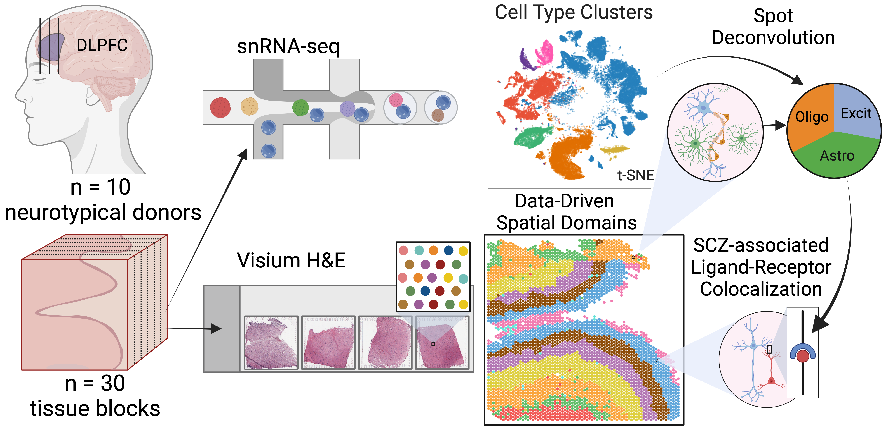
Background
DLPFC
The dorsolateral prefrontal cortex region of the brain is especially important for executive functions including working memory, cognitive flexibility, and planning. Disruptions of the DLPFC have been associated with several psychiatric and neurodevelopmental disorders, including schizophrenia and autism spectrum disorder.
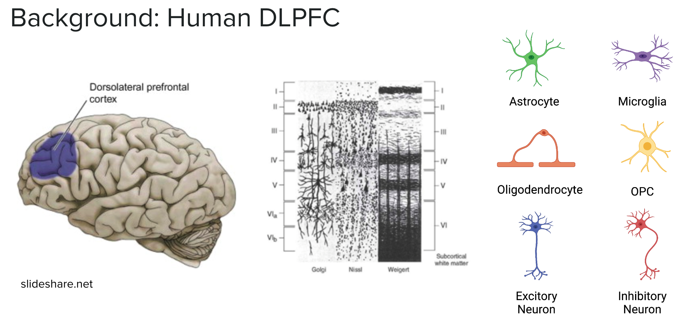
RNA-sequencing
One of the ways that we can understand the functions of different cell types and structures in the brain is to study what genes they express by sequencing the RNA in a tissue. Recently, several advanced transcriptomic1 approaches using RNA sequencing have emerged, enhancing our ability to analyze gene expression in the brain.
This LEGO brain schematic demonstrates the evolution from bulk RNA sequencing, which provides a mixture of cell types, to single cell/single nucleus RNA-seq, which reveals the transcriptional profiles of individual cell types. The latest advancement, spatial transcriptomics, links gene expression to specific anatomical locations, providing deeper insights into the relationships between brain structure and function.
Single Nucleus RNA-seq
Single nucleus or single cell RNA sequencing (snRNA-seq) enables us to examine the gene expression of individual cells or nuclei. This technique relies on uniquely barcoded gel beads that attach to a single cell or nucleus, tagging all RNA molecules from that cell. When sequenced, these tagged RNA molecules can be traced back to their original cell. Cells or nuclei are then typically clustered by their gene expression profiles to identify different cell type populations. The expression profiles and cluster assignments are often visualized using reduced dimension plots such as UMAPs or tSNE. In these plots, each point represents a cell, and the distance between points indicates their similarity2; closer points represent more similar cells, which are often of the same cell type (shown by different colors).
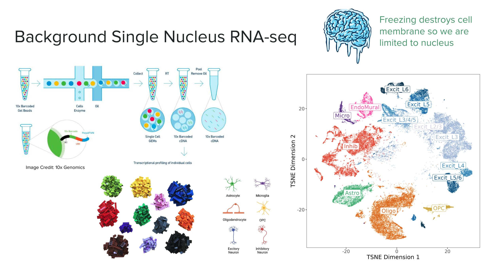
In this experiment we are working with nuclei, as the cell membrane is destroyed when the brain tissue is frozen. The major cell type populations to identify in the DLPFC are neurons (Excitatory and Inhibitory), glial cells (ex: Astrocytes, Microglia, Oligodendrocytes, OPC), and vascular cells (Endothelial & Mural).
Spatially Resolved Transcriptomics (Visium)
Spatially resolved transcriptomics maps RNA to specific locations on a tissue sample, allowing us to profile gene expression across anatomical features such as blood vessels, glands, or, in our case, layers of the brain’s cortex.
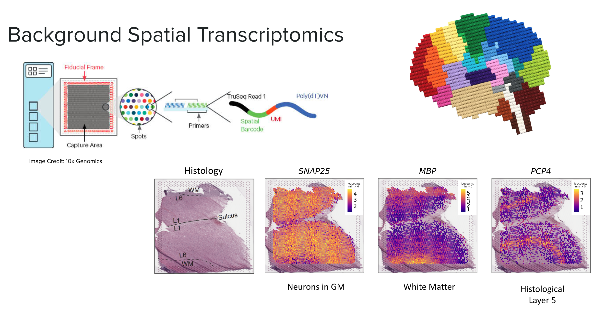
We used Visium slides, which feature a grid of approximately 5,000 spots arranged in a 6.5x6.5 mm area. Each spot has a unique barcode that binds to the RNA in the contacted tissue. When the RNA is sequenced, these molecules can be traced back to their specific grid locations, similar to the barcodes in snRNA-seq.
This RNA-seq data is paired with a high-definition histology image of the original tissue, providing additional information and aiding in data visualization. We can visualize the gene expression of each spot in “spot plots” using color gradients overlaid on these images. In the example above we highlight the location of the gray matter with SNAP25 a gene highly expressed in neurons, MBP highlights white matter, and PCP4 marks layer 5.
Study Design
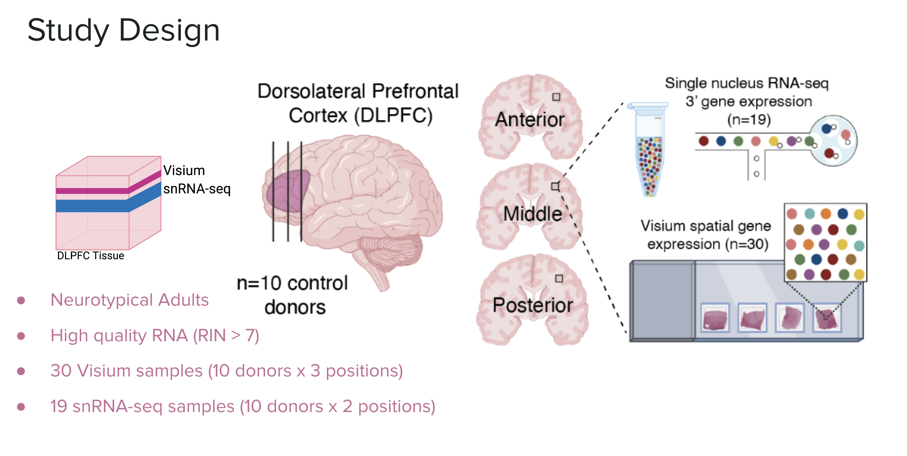
In this study we analyzed the DLPFC of ten healthy adult donors. We sampled three locations of the DLPFC: the anterior, middle, and posterior. All 30 samples were analyzed with Visium spatial transcriptomics, 19 (about 2 from each donor) were selected for snRNA-seq.
Data-Driven Spatial Domains
An earlier study, from the Lieber Institute, of spatial transcriptomics in the DLPFC (Maynard et al. 2021) relied on manually annotating the known layers of the cortex based on the histological images and the expression of select genes. This dataset has been invaluable for testing methodologies in spatial transcriptomics. However, manual annotation is tedious, time-consuming, and prone to human error and bias.
In our current study, which builds on the previous DLPFC project, we aimed to use unsupervised clustering to annotate the layers of the DLPFC, thereby avoiding the labor-intensive process of manual annotation and potentially discovering novel or unknown layers in the brain.
Based on benchmarking against the manually annotated layer data, we chose the method BayesSpace as the best method for clustering spatial data. We clustered the 30 Visium slides at a large range of resolutions, from k=2 to 28 (k denotes the number of clusters). We refer to these clusters as spatial domains, to name these domains we used the syntax \(Sp_{k}D_{d}\), where k is clustering resolution and d is spatial domain number, so \(Sp_{9}D_{1}\) is spatial domain 1 when k=9.
We found that k=2 did a great job separating the white matter from the gray matter. With an increasing number of clusters, the layers of the cortex begin to emerge. This brings us to a question: which level of clustering best captures biologically important layers of the DLPFC?
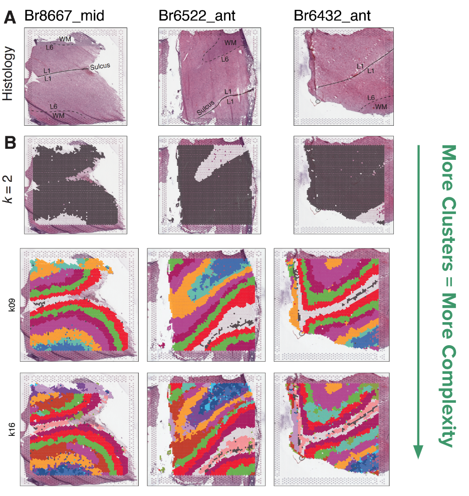
Spatial Registration of BayesSpace Clusters
To check which resolution of BayesSpace clusters best matches the six histological layers plus white matter, we used a useful analysis we’ve developed called “spatial registration”. We will delve into the details of this analysis in a future blog post, and its application in this vignette.
Briefly this analysis compares the gene expression profile of a reference set of clusters such as spatial regions or domains, annotated features, or cell type populations etc. (in this case the manual annotations from the pilot dataset), to a query set of clusters we want to learn more about (the BayesSpace clusters). The t-statistics from an enrichment analysis in the query and the reference set are correlated, pairwise across all groups. We visualize this in a heatmap where the high correlation is green, low correlation is purple. Where a query cluster has high correlation with a reference cluster, we can say the two groups are associated, and if the correlation passes our threshold we annotate the query group with the reference.
In the below example \(Sp_{7}D_{7}\) has a high correlation with the manual annotation white matter, we then annotate it as \(Sp_{7}D_{7}\sim WM\). This annotation helps add biological context to our newly defined spatial domains.
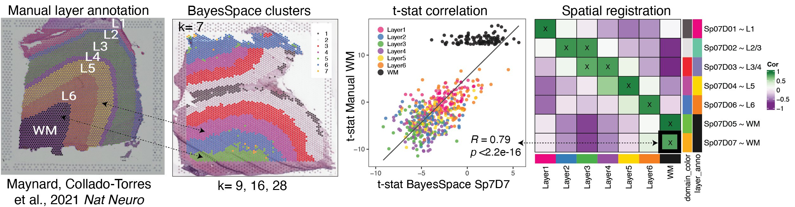
From this process we learned that k=9 best reiterated the expected pattern of six layers + white matter, by matching each spatial domain to only one layer. In contrast to the k=7 resolution where some of the spatial domains (\(Sp_{7}D_{2}\) and \(Sp_{7}D_{3}\)) matched more than one layer. K=9 split white matter and Layer 1 into two spatial domains with unique gene expression.
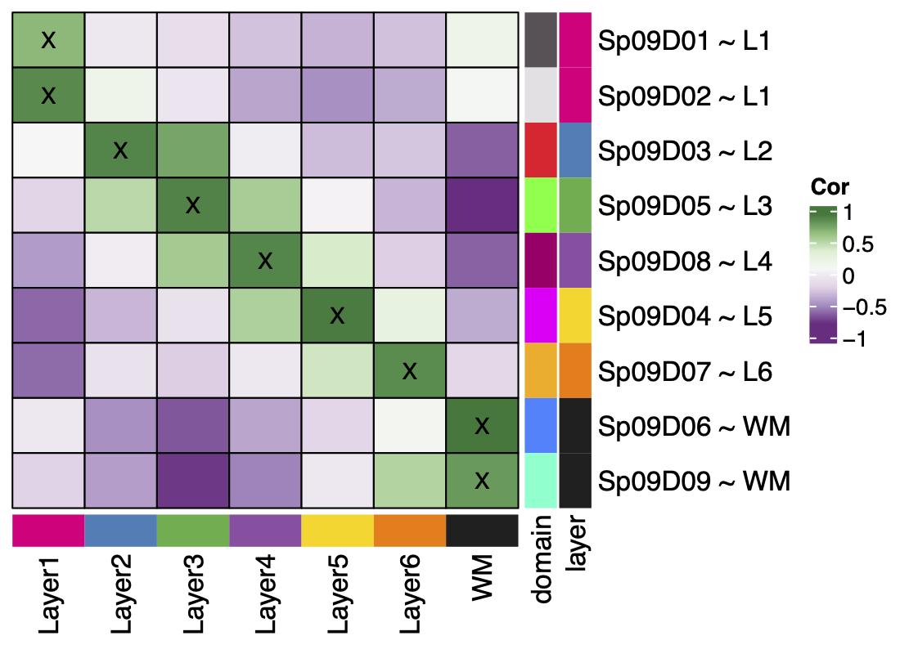
For higher resolution clustering, k=16 was determined to be the optimal number of clusters based on the fast H+ statistic, so based on the data this is the best way to cluster the data. This further split the six original layers into 2-3 sub-layers each. The maximum number of clusters we could comfortably run on our computing setup was k=28, at this high number of clusters we lose the laminar definition.
Novel Biology in Spatial Domains
So what does all this clustering and layer matching help us learn about the brain?
At each resolution differentially expressed genes were detected between the spatial domains, this shows the complex organization of gene expression across the DLPFC tissue.
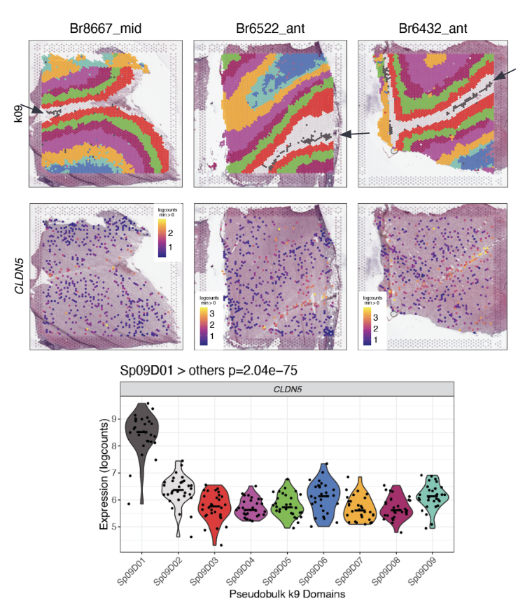
The data-driven clustering at k=9 revealed a sub-layer of the white matter with as much difference in gene expression that exists in the previously considered layers. It also found a thin band of vascular tissue (\(Sp_{9}D_{1}\sim L1\)) in layer 1 with high expression for endothelial genes like CLDN5. These were both novel findings resulting from the unsupervised clustering. The sub-layers found in k=16 had distinct gene expression profiles.
These new spatial domains help refine the layered anatomy of the DLPFC. Neat! üéâ
Single Nucleus RNA-seq

On the single nucleus side of the experiment, we processed 56k nuclei from n=19 samples. The first round of clustering (hierarchical clustering) found 29 distinct cell type clusters from seven broad cell types (note the abbreviations):
Glia & Vascular cells: provide structure to the brain, support neurons3
Astrocytes (Astro):link neurons to blood supply, clear neurotransmitters
Endothelial/Mural cells (EndoMural): blood vessels/vascular tissue
Microglia (Micro): immune function
Oligodendrocytes (Oligo): myelin sheath
Oligodendrocyte Precursor cells (OPCs)
Neurons: send and receive signals in the brain
Excitatory Neurons (Excit)
Inhibitory Neurons (Inhib)
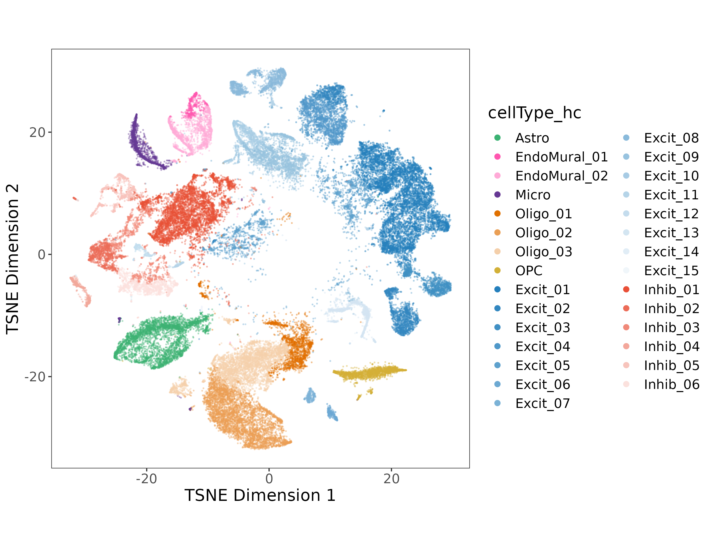
Sub-populations in EndoMural, Oligos, and the Excit/Inhib Neurons were found in the first round of clustering.
In the DLPFC we know that different populations of excitatory neurons exist between the six layers of gray matter. To annotate our 13 Excit clusters we brought back our spatial registration tool, comparing all of the 29 hierarchical clusters to the manually annotated clusters from (Maynard et al. 2021) as well as the BayesSpace spatial domains at k=9 & k=16.
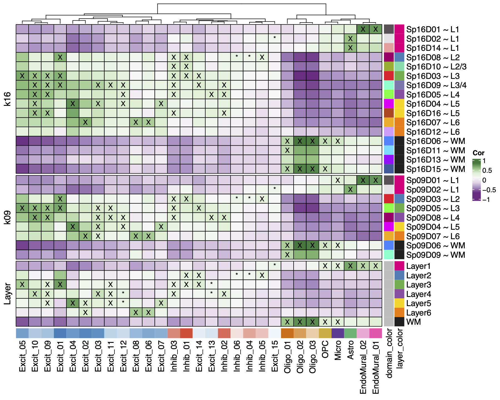
We found Oligo and OPC cell types mapped to white matter, and EndoMural plus Astro mapped to Layer 1. Inhib neurons had a weak association with Layer 2-4, and the Excit neurons had strong associations with 1-3 layers each across the gray matter. The same patterns were found and re-fined in the spatial domains, such as the EndoMural groups mapping to \(Sp_{9}D_{1}\sim L1\).
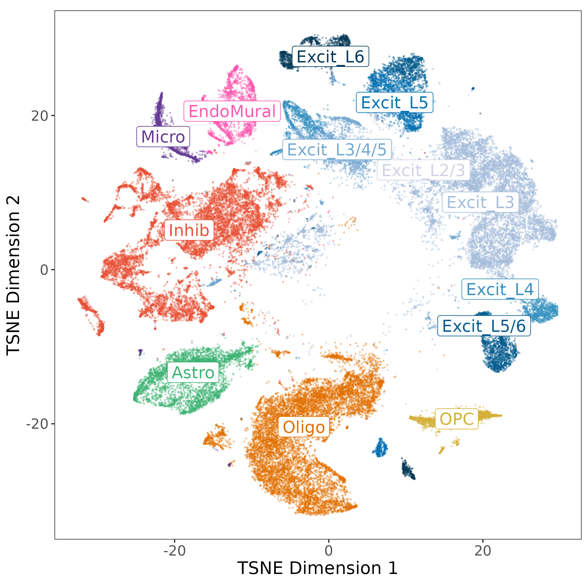
The layer associations were used to annotate the excitatory neuron populations by their strongest associated layers, other cell types were collapsed to their broad cell types. This resulted in our “layer-level” annotation with 13 cell types, and 7 populations of Excit neurons.
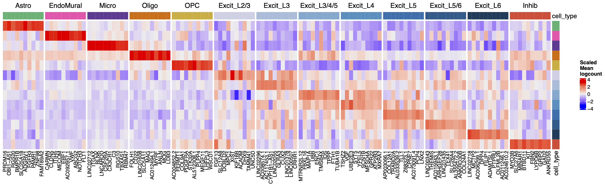
For each cell type we identified cell type specific marker genes with the Mean Ratio method described in (Huuki-Myers et al., n.d.). The end product is gene expression profiles for layer annotated cell types in the human DLPFC! ü¶†
Data Integration
With this combined spatial and snRNA-seq data, there are a number of interesting downstream analyzes possible. Here I will briefly touch on two ways we integrated these data types.
Spot Deconvolution
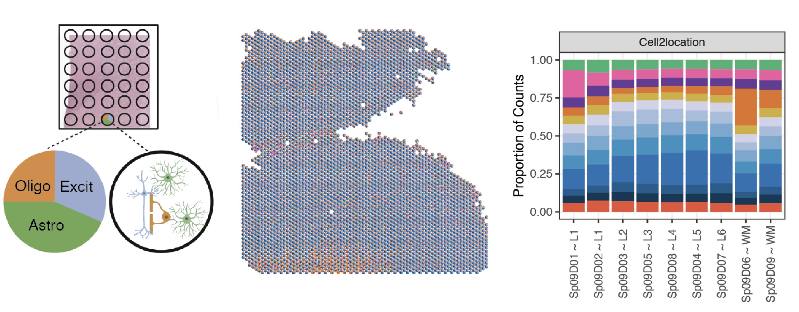
A challenge with Visium spatial transcriptomics is that each spot is larger than single cell resolution, and on average contains 3 cells per spot. To better understand the gene expression of each spot, we employed an analysis called spot deconvolution, which predicts what cell types exist in the tissue for each Visium spot.
We determined that the methods Tangram and Cell2location were the most accurate for predicting cell type compositions through a benchmark experiment. From there we predicted the cell type composition of the spots across the 30 Visium slides with both deconvolution methods.
The spot deconvolution work was performed by Nick Eagles. Check out his spot deconvolution slide deck above for more details.
Spatially Map Disease Ligand Receptor Interactions
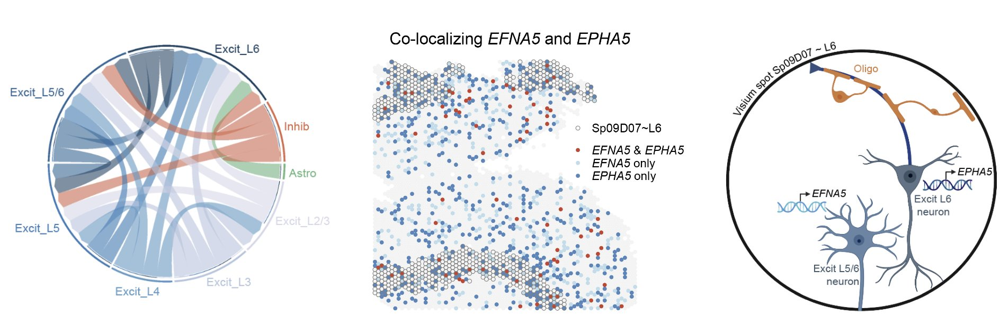
To show how this dataset can be a rich resource to study neuropsychiatric diseases we explored the spatial location of a ligand-receptor (LR) interaction that is associated with schizophrenia. We performed a cell-cell communication analysis which predicts which cell types are interacting with each other, and then identified overlapping LR pairs with risk of schizophrenia from databases with the cell-cell communication results. From the common set of LR pairs we examined ligand EFNA5 & receptor EPHA5. From the snRNA-seq populations, EFNA5 was most expressed in Excit_L5/6, and EPHA5 in Excit_L6. From the Visium data we identified spots where the two genes were co-expressed, most frequent in \(Sp_{9}D_{7}\sim L6\), these spots also had high proportions of Excit_L5/6 neurons and Excit_L6 neurons predicted by spot deconvolution. Spatially mapping LR pairs helps us gain insight into the potentials for drug development. (This cool work was completed by Boyi Guo and Melissa Grant-Peters)
This analysis used many elements of the data from the spatialDLPFC project, and is just one example of how this dataset is relevant to the study of disease. In another application we also checked for enrichment of depression and PTSD related genes between the spatial domains. There are lots of exciting applications for the study of diseases with spatial and single cell, stay tuned to future work from the Lieber Institute for more! üëÄ
Summary
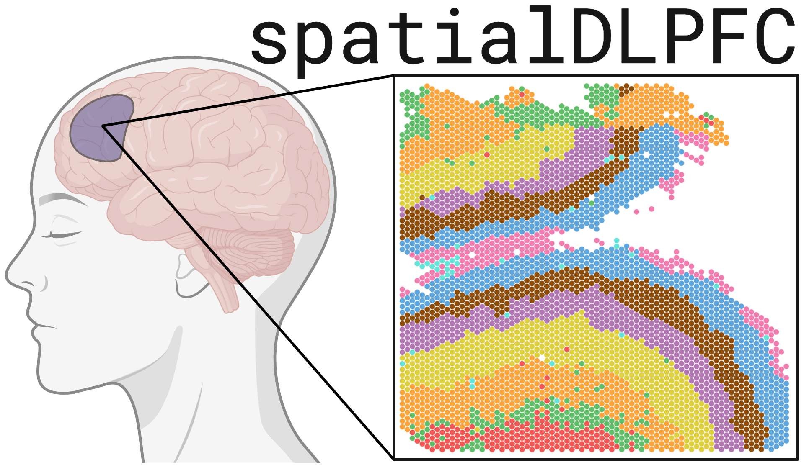
Overall we’ve created a paired spatial transcriptomic and single nucleus RNA-seq dataset of the human DLPFC. We’ve used spatial registration to map the new spatial domains and excitatory neurons to the classical histological layers. The data-driven spatial domains refine the layers of the DLPFC, finding laminar domains and cortical sub-layers. Spot deconvolution further refines the profile of each spot. This data has many applications in the study of neuropsychiatric diseases. We’ve made this dataset widely available to the scientific community (see below).
For more details be sure to check out our recently published paper in Science (Huuki-Myers et al. 2024) üéâhttps://doi.org/10.1126/science.adh1938
Data Availability
The 30 DLPFC Visium samples & the 56k nuclei snRNA-seq dataset are available to explore on our interactive websites and Bioconductor/R package spatialLIBD.
Check out how your favorite gene is expressed over the layers or cell types of the DLPFC!
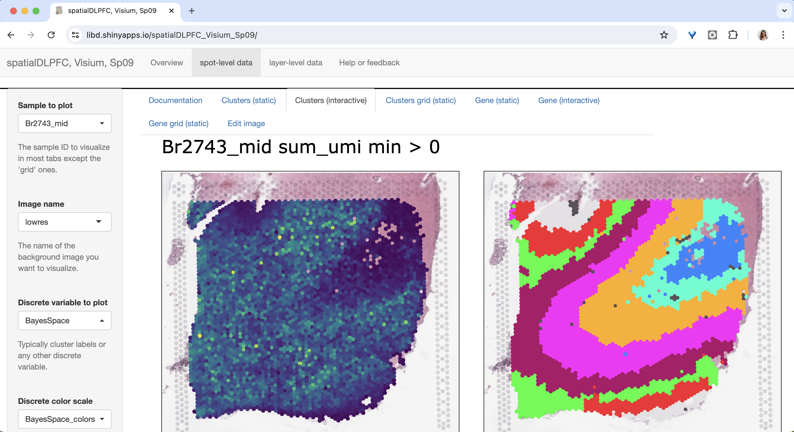
References
Footnotes
the measurement of RNA transcription is known as “transcriptomics”↩︎
The full interpretation of these kinds of plots takes much nuance we won’t discuss here↩︎
The following are brief notes on cell type function to provide context, not comprehensive descriptions of the complex roles of these cell types↩︎